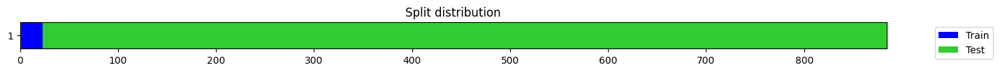
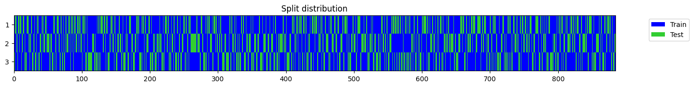

from fastai.data.transforms import get_filesExternal data
Helper functions used to download and extract common time series datasets.
decompress_from_url
decompress_from_url (url, target_dir=None, verbose=False)
download_data
download_data (url, fname=None, c_key='archive', force_download=False, timeout=4, verbose=False)
Download url to fname.
get_UCR_univariate_list
get_UCR_univariate_list ()
get_UCR_multivariate_list
get_UCR_multivariate_list ()
get_UCR_data
get_UCR_data (dsid, path='.', parent_dir='data/UCR', on_disk=True, mode='c', Xdtype='float32', ydtype=None, return_split=True, split_data=True, force_download=False, verbose=False)
PATH = Path('.')
dsids = ['ECGFiveDays', 'AtrialFibrillation'] # univariate and multivariate
for dsid in dsids:
print(dsid)
tgt_dir = PATH/f'data/UCR/{dsid}'
if os.path.isdir(tgt_dir): shutil.rmtree(tgt_dir)
test_eq(len(get_files(tgt_dir)), 0) # no file left
X_train, y_train, X_valid, y_valid = get_UCR_data(dsid)
test_eq(len(get_files(tgt_dir, '.npy')), 6)
test_eq(len(get_files(tgt_dir, '.npy')), len(get_files(tgt_dir))) # test no left file/ dir
del X_train, y_train, X_valid, y_valid
X_train, y_train, X_valid, y_valid = get_UCR_data(dsid)
test_eq(X_train.ndim, 3)
test_eq(y_train.ndim, 1)
test_eq(X_valid.ndim, 3)
test_eq(y_valid.ndim, 1)
test_eq(len(get_files(tgt_dir, '.npy')), 6)
test_eq(len(get_files(tgt_dir, '.npy')), len(get_files(tgt_dir))) # test no left file/ dir
test_eq(X_train.ndim, 3)
test_eq(y_train.ndim, 1)
test_eq(X_valid.ndim, 3)
test_eq(y_valid.ndim, 1)
test_eq(X_train.dtype, np.float32)
test_eq(X_train.__class__.__name__, 'memmap')
del X_train, y_train, X_valid, y_valid
X_train, y_train, X_valid, y_valid = get_UCR_data(dsid, on_disk=False)
test_eq(X_train.__class__.__name__, 'ndarray')
del X_train, y_train, X_valid, y_validECGFiveDays
AtrialFibrillationX_train, y_train, X_valid, y_valid = get_UCR_data('natops')dsid = 'natops'
X_train, y_train, X_valid, y_valid = get_UCR_data(dsid, verbose=True)
X, y, splits = get_UCR_data(dsid, split_data=False)
test_eq(X[splits[0]], X_train)
test_eq(y[splits[1]], y_valid)
test_eq(X[splits[0]], X_train)
test_eq(y[splits[1]], y_valid)
test_type(X, X_train)
test_type(y, y_train)Dataset: NATOPS
X_train: (180, 24, 51)
y_train: (180,)
X_valid: (180, 24, 51)
y_valid: (180,)
check_data
check_data (X, y=None, splits=None, show_plot=True)
dsid = 'ECGFiveDays'
X, y, splits = get_UCR_data(dsid, split_data=False, on_disk=False, force_download=False)
check_data(X, y, splits)
check_data(X[:, 0], y, splits)
y = y.astype(np.float32)
check_data(X, y, splits)
y[:10] = np.nan
check_data(X[:, 0], y, splits)
X, y, splits = get_UCR_data(dsid, split_data=False, on_disk=False, force_download=False)
splits = get_splits(y, 3)
check_data(X, y, splits)
check_data(X[:, 0], y, splits)
y[:5]= np.nan
check_data(X[:, 0], y, splits)
X, y, splits = get_UCR_data(dsid, split_data=False, on_disk=False, force_download=False)X - shape: [884 samples x 1 features x 136 timesteps] type: ndarray dtype:float32 isnan: 0
y - shape: (884,) type: ndarray dtype:<U1 n_classes: 2 (442 samples per class) ['1', '2'] isnan: False
splits - n_splits: 2 shape: [23, 861] overlap: False
X - shape: (884, 136) type: ndarray dtype:float32 isnan: 0
y - shape: (884,) type: ndarray dtype:<U1 n_classes: 2 (442 samples per class) ['1', '2'] isnan: False
splits - n_splits: 2 shape: [23, 861] overlap: False
X - shape: [884 samples x 1 features x 136 timesteps] type: ndarray dtype:float32 isnan: 0
y - shape: (884,) type: ndarray dtype:float32 isnan: 0
splits - n_splits: 2 shape: [23, 861] overlap: False
X - shape: (884, 136) type: ndarray dtype:float32 isnan: 0
y - shape: (884,) type: ndarray dtype:float32 isnan: 10
splits - n_splits: 2 shape: [23, 861] overlap: False/var/folders/42/4hhwknbd5kzcbq48tmy_gbp00000gn/T/ipykernel_70492/278801922.py:23: UserWarning: y contains nan values
warnings.warn('y contains nan values')
X - shape: [884 samples x 1 features x 136 timesteps] type: ndarray dtype:float32 isnan: 0
y - shape: (884,) type: ndarray dtype:<U1 n_classes: 2 (442 samples per class) ['1', '2'] isnan: False
splits - n_splits: 3 shape: [[589, 295], [589, 295], [590, 294]] overlap: [False, False, False]
X - shape: (884, 136) type: ndarray dtype:float32 isnan: 0
y - shape: (884,) type: ndarray dtype:<U1 n_classes: 2 (442 samples per class) ['1', '2'] isnan: False
splits - n_splits: 3 shape: [[589, 295], [589, 295], [590, 294]] overlap: [False, False, False]
X - shape: (884, 136) type: ndarray dtype:float32 isnan: 0
y - shape: (884,) type: ndarray dtype:<U1 n_classes: 3 (294 samples per class) ['1', '2', 'n'] isnan: False
splits - n_splits: 3 shape: [[589, 295], [589, 295], [590, 294]] overlap: [False, False, False]
get_Monash_regression_list
get_Monash_regression_list ()
get_Monash_regression_data
get_Monash_regression_data (dsid, path='./data/Monash', on_disk=True, mode='c', Xdtype='float32', ydtype=None, split_data=True, force_download=False, verbose=False, timeout=4)
dsid = "Covid3Month"
X_train, y_train, X_valid, y_valid = get_Monash_regression_data(dsid, on_disk=False, split_data=True, force_download=False)
X, y, splits = get_Monash_regression_data(dsid, on_disk=True, split_data=False, force_download=False, verbose=True)
if X_train is not None:
test_eq(X_train.shape, (140, 1, 84))
if X is not None:
test_eq(X.shape, (201, 1, 84))Dataset: Covid3Month
X : (201, 1, 84)
y : (201,)
splits : (#140) [0,1,2,3,4,5,6,7,8,9...] (#61) [140,141,142,143,144,145,146,147,148,149...]
get_forecasting_list
get_forecasting_list ()
get_forecasting_time_series
get_forecasting_time_series (dsid, path='./data/forecasting/', force_download=False, verbose=True, **kwargs)
ts = get_forecasting_time_series("sunspots", force_download=False)
test_eq(len(ts), 2820)
tsDataset: Sunspots
downloading data...
...done. Path = data/forecasting/Sunspots.csv| Sunspots | |
|---|---|
| Month | |
| 1749-01-31 | 58.0 |
| 1749-02-28 | 62.6 |
| 1749-03-31 | 70.0 |
| 1749-04-30 | 55.7 |
| 1749-05-31 | 85.0 |
| ... | ... |
| 1983-08-31 | 71.8 |
| 1983-09-30 | 50.3 |
| 1983-10-31 | 55.8 |
| 1983-11-30 | 33.3 |
| 1983-12-31 | 33.4 |
2820 rows × 1 columns
ts = get_forecasting_time_series("weather", force_download=False)
if ts is not None:
test_eq(len(ts), 70091)
display(ts)Dataset: Weather
downloading data...
...done. Path = data/forecasting/Weather.csv.zip| p (mbar) | T (degC) | Tpot (K) | Tdew (degC) | rh (%) | VPmax (mbar) | VPact (mbar) | VPdef (mbar) | sh (g/kg) | H2OC (mmol/mol) | rho (g/m**3) | Wx | Wy | max Wx | max Wy | Day sin | Day cos | Year sin | Year cos | |
|---|---|---|---|---|---|---|---|---|---|---|---|---|---|---|---|---|---|---|---|
| 0 | 996.50 | -8.05 | 265.38 | -8.78 | 94.40 | 3.33 | 3.14 | 0.19 | 1.96 | 3.15 | 1307.86 | -0.204862 | -0.046168 | -0.614587 | -0.138503 | -1.776611e-12 | 1.000000 | 0.009332 | 0.999956 |
| 1 | 996.62 | -8.88 | 264.54 | -9.77 | 93.20 | 3.12 | 2.90 | 0.21 | 1.81 | 2.91 | 1312.25 | -0.245971 | -0.044701 | -0.619848 | -0.112645 | 2.588190e-01 | 0.965926 | 0.010049 | 0.999950 |
| 2 | 996.84 | -8.81 | 264.59 | -9.66 | 93.50 | 3.13 | 2.93 | 0.20 | 1.83 | 2.94 | 1312.18 | -0.175527 | 0.039879 | -0.614344 | 0.139576 | 5.000000e-01 | 0.866025 | 0.010766 | 0.999942 |
| 3 | 996.99 | -9.05 | 264.34 | -10.02 | 92.60 | 3.07 | 2.85 | 0.23 | 1.78 | 2.85 | 1313.61 | -0.050000 | -0.086603 | -0.190000 | -0.329090 | 7.071068e-01 | 0.707107 | 0.011483 | 0.999934 |
| 4 | 997.46 | -9.63 | 263.72 | -10.65 | 92.20 | 2.94 | 2.71 | 0.23 | 1.69 | 2.71 | 1317.19 | -0.368202 | 0.156292 | -0.810044 | 0.343843 | 8.660254e-01 | 0.500000 | 0.012199 | 0.999926 |
| ... | ... | ... | ... | ... | ... | ... | ... | ... | ... | ... | ... | ... | ... | ... | ... | ... | ... | ... | ... |
| 70086 | 1002.18 | -0.98 | 272.01 | -5.36 | 72.00 | 5.69 | 4.09 | 1.59 | 2.54 | 4.08 | 1280.70 | -0.855154 | -0.160038 | -1.336792 | -0.250174 | -9.990482e-01 | 0.043619 | 0.006183 | 0.999981 |
| 70087 | 1001.40 | -1.40 | 271.66 | -6.84 | 66.29 | 5.51 | 3.65 | 1.86 | 2.27 | 3.65 | 1281.87 | -0.716196 | -0.726267 | -1.348134 | -1.367090 | -9.537170e-01 | 0.300706 | 0.006900 | 0.999976 |
| 70088 | 1001.19 | -2.75 | 270.32 | -6.90 | 72.90 | 4.99 | 3.64 | 1.35 | 2.26 | 3.63 | 1288.02 | -0.661501 | 0.257908 | -1.453438 | 0.566672 | -8.433914e-01 | 0.537300 | 0.007617 | 0.999971 |
| 70089 | 1000.65 | -2.89 | 270.22 | -7.15 | 72.30 | 4.93 | 3.57 | 1.37 | 2.22 | 3.57 | 1288.03 | -0.280621 | -0.209169 | -0.545207 | -0.406385 | -6.755902e-01 | 0.737277 | 0.008334 | 0.999965 |
| 70090 | 1000.11 | -3.93 | 269.23 | -8.09 | 72.60 | 4.56 | 3.31 | 1.25 | 2.06 | 3.31 | 1292.41 | -0.516998 | -0.215205 | -0.923210 | -0.384295 | -4.617486e-01 | 0.887011 | 0.009050 | 0.999959 |
70091 rows × 19 columns
convert_tsf_to_dataframe
convert_tsf_to_dataframe (full_file_path_and_name, replace_missing_vals_with='NaN', value_column_name='series_value')
get_Monash_forecasting_data
get_Monash_forecasting_data (dsid, path='./data/forecasting/', force_download=False, remove_from_disk=False, add_timestamp=True, verbose=True)
get_fcst_horizon
get_fcst_horizon (frequency, dsid)
preprocess_Monash_df
preprocess_Monash_df (df, frequency)
dsid = 'covid_deaths_dataset'
df = get_Monash_forecasting_data(dsid, force_download=False)
if df is not None:
test_eq(df.shape, (56392, 3))Dataset: covid_deaths_dataset
downloading data...
...data downloaded
decompressing data...
...data decompressed
converting data to dataframe...
...done
freq : daily
forecast_horizon : 30
contain_missing_values : False
contain_equal_length : True
exploding dataframe...
...done
data.shape: (56392, 3)download_all_long_term_forecasting_data
download_all_long_term_forecasting_data (target_dir='./data/long_forecas ting/', force_download=False, remove_zip=False, c_key='archive', timeout=4, verbose=True)
unzip_file
unzip_file (file, target_dir)
get_long_term_forecasting_data
get_long_term_forecasting_data (dsid, target_dir='./data/long_forecasting/', task='M', fcst_horizon=None, fcst_history=None, preprocess=True, force_download=False, remove_zip=False, return_df=True, show_plot=True, dtype=<class 'numpy.float32'>, verbose=True, **kwargs)
Downloads (and preprocess) a pandas dataframe with the requested long-term forecasting dataset
| Type | Default | Details | |
|---|---|---|---|
| dsid | ID of the dataset to be used for long-term forecasting. | ||
| target_dir | str | ./data/long_forecasting/ | Directory where the long-term forecasting data will be saved. |
| task | str | M | ‘M’ for multivariate, ‘S’ for univariate and ‘MS’ for multivariate input with univariate output |
| fcst_horizon | NoneType | None | # historical steps used as input. If None, the default is applied. |
| fcst_history | NoneType | None | # steps forecasted into the future. If None, the minimum default is applied. |
| preprocess | bool | True | Flag that indicates whether if the data is preprocessed before saving. |
| force_download | bool | False | Flag that indicates if the data should be downloaded again even if directory exists. |
| remove_zip | bool | False | Flag that indicates if the zip file should be removed after extracting the data. |
| return_df | bool | True | Flag that indicates whether a dataframe (True) or X and and y arrays (False) are returned. |
| show_plot | bool | True | plot the splits |
| dtype | type | float32 | |
| verbose | bool | True | Flag tto indicate the verbosity. |
| kwargs | VAR_KEYWORD |
dsid = "ILI"
try:
df = get_long_term_forecasting_data(dsid, target_dir='./data/forecasting/', force_download=False)
print(f"{dsid:15}: {str(df.shape):15}")
del df; gc.collect()
remove_dir('./data/forecasting/', False)
except Exception as e:
print(f"{dsid:15}: {str(e):15}")
100.01% [54001664/53995526 00:09<00:00]
/Users/nacho/opt/anaconda3/envs/py39t20/lib/python3.9/site-packages/fastai/tabular/core.py:23: UserWarning: The argument 'infer_datetime_format' is deprecated and will be removed in a future version. A strict version of it is now the default, see https://pandas.pydata.org/pdeps/0004-consistent-to-datetime-parsing.html. You can safely remove this argument.
df[date_field] = pd.to_datetime(df[date_field], infer_datetime_format=True)ILI : (966, 8) dsid = "ILI"
try:
X, y, splits, stats = get_long_term_forecasting_data(dsid, target_dir='./data/forecasting/', force_download=False, return_df=False, show_plot=False)
print(f"{dsid:15} - X.shape: {str(X.shape):20} y.shape: {str(y.shape):20} splits: {str([len(s) for s in splits]):25} \
stats: {str([s.shape for s in stats]):30}")
del X, y, splits, stats
gc.collect()
remove_dir('./data/forecasting/', False)
except Exception as e:
print(f"{dsid:15}: {str(e):15}")
100.01% [54001664/53995526 00:09<00:00]
/Users/nacho/opt/anaconda3/envs/py39t20/lib/python3.9/site-packages/fastai/tabular/core.py:23: UserWarning: The argument 'infer_datetime_format' is deprecated and will be removed in a future version. A strict version of it is now the default, see https://pandas.pydata.org/pdeps/0004-consistent-to-datetime-parsing.html. You can safely remove this argument.
df[date_field] = pd.to_datetime(df[date_field], infer_datetime_format=True)ILI - X.shape: (839, 7, 104) y.shape: (839, 7, 24) splits: [549, 74, 170] stats: [(1, 7, 1), (1, 7, 1)]